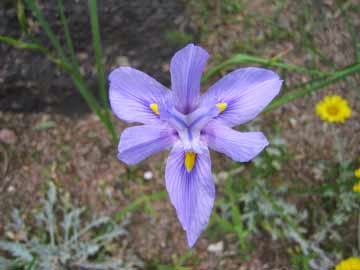

Recovered weblog entry
A journey for photos' sake
A thousand apologies. In my desire to continue my vacation well into Monday morning, I avoided my computer like month-old milk.
But we're back to the grind now. It's approximately 7:30pm, and I'm late. But fear not, because I have something to show for the delay.
Pictures. Yes, I took that adventure that I had been wanting. I ventured outside my apartment vicinity for what seems like the first time in weeks. I feel like this because in my moments of solitary meditation last week, I continually envisioned the same scenery in my mind over and over. It all consisted of the area surrounding my apartment and work local.
Blah blah. My journey took me to downtown Phoenix, where I photographed the Viad Building and its immediate surroundings. Please let me explain, I haven't had much experience with digital photography, and I've had even less experience with this camera. So, those pictures didn't turn out that great.
That is, until I visited the botanical gardens east of town. At first, I was sorely disappointed by the lack of variety and poor supply of vivid color on my trek around the jardin.
But after I took off my durn-blasted sunglasses, which have more scratches than my brother's 45's after I listened to them as a child, I began to see the small bits of color that were strewn about the area.

My Favorite
I sincerely enjoyed that part of my day. I found it relaxing, invigorating, and educational (although I failed to write down any of the names of the flora) The most amusing part of the garden was the Library.
This bibliotek was placed adjacent the visitors center, so i stopped there before leaving. I took out my camera and began taking random pictures because I could, when all of a sudden, the librarian came swooping out of the woodwork.
"I see that you're taking pictures", she said.
"Er, yes.", I said, rather startled. "Is that ok? I can stop if you'd like."
"Oh, no! It's quite alright. Are you a librarian?", she inquired, excitedly.
"Well, no, but I have an extreme fascination with small libraries.", I lied.
"Oh, that's absolutely wonderful! Are you from a newspaper?" she said, her left eye twitching wildly. I was beginning to believe she might actually faint at this point.
"No, no...I'm from...I'm from my school in Colorado. I'm taking pictures of small Arizona libraries for my Senior project." I said. My web of lies was growing faster than my desire to keep the charade up.
"Well, be sure to sign our guest book up front. And feel free to take as many pictures as you please!" she exclaimed, and disappeared as fast as she came.
I was relieved that she had decided to end the conversation at that point. I don't know if:
A. I could come up with more falsifications, and
B. If I could keep from laughing any longer
Since I've gone on long enough about this library, how about the link to these aforementioned pictures? You may find them here, or you can always find this permanently on my Media Page.
And that's it, for I must save more verbiage for later on tonight. I must cook up another blog for those who read late at night or early in the morning. Again, sorry for the delay, and I hope that the pictures make up for it.
Postscript: For a limited time, I will be offering these pictures for download in whatever size you need.
Please Contact Me to request a size.
800x600 1024x768 1280x1024 1600x1200